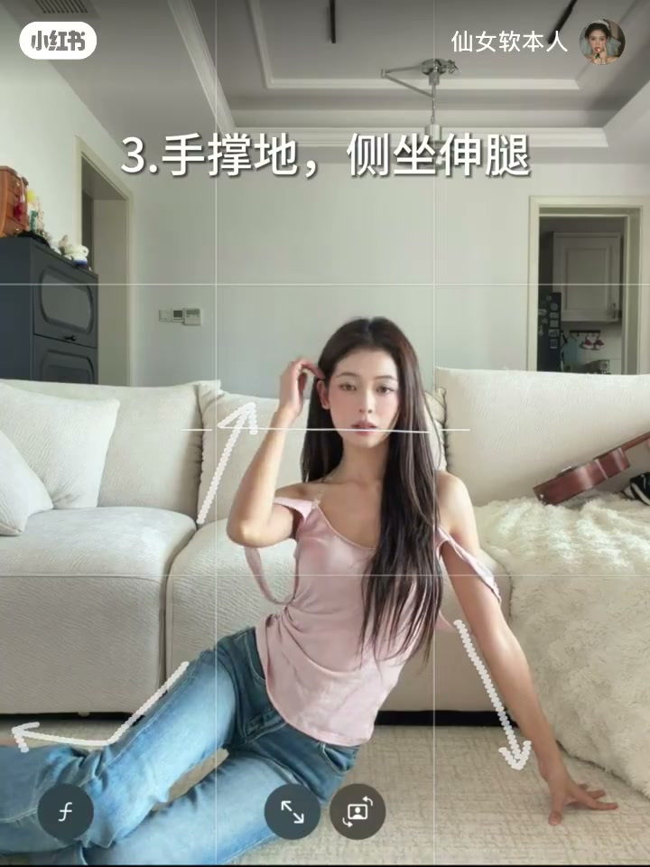
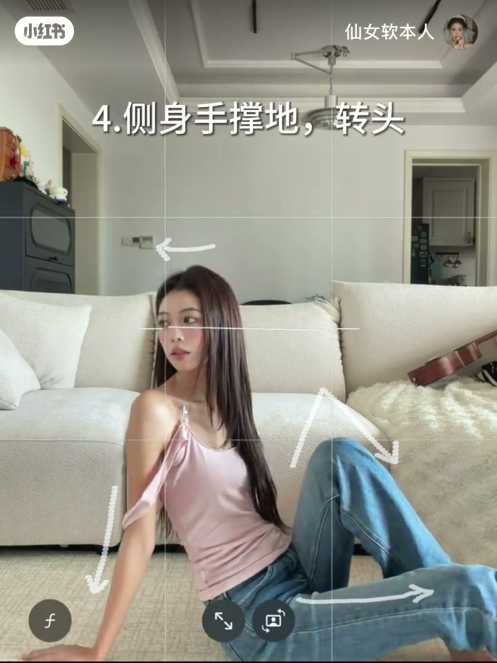

内容要点
一支 18 秒的海边 pose 快闪教学：白裙女孩在海边配合音乐连续变换多个姿势，从背影看海、侧身回头到撩发回眸，每个姿势都瞄准夏日氛围感，跟着画面即可快速跟练。
知识结构
[00:00→00:06]
开场姿势
背影看海定格，营造意境感开场。
[00:06→00:12]
中间变化
侧身回头、撩发利用海风，动作节奏加快。
[00:12→00:18]
收尾定格
回眸看镜头收尾，画面定格氛围感拉满。
总结
海边氛围感姿势：利用背影看海营造意境、回眸看镜头增加互动、撩发利用海风、侧身拉长线条，配合自然光线拍出夏日感。
开场：背影看海
开场以背影看海的姿势定格，人物站在海边，利用辽阔海景与人物背影营造意境感。
中间：侧身与撩发
接着变换为侧身回头与撩发的动作，利用海风带动发丝与裙摆，动作节奏与音乐同步加快。

收尾：回眸定格
最后以回眸看镜头的姿势收尾，画面定格，夏日氛围感拉满。
